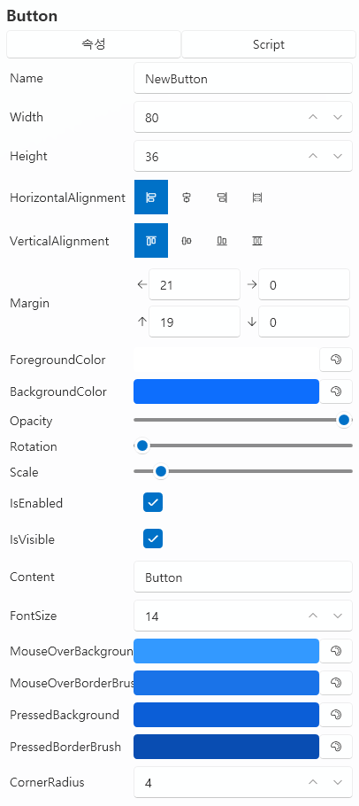

UI 标签页¶
UI 标签页是用于构建和控制项目界面（User Interface）的编辑器。
你可以在这里放置按钮、图像、文本等各种 UI 控件，
并通过脚本将它们连接起来，实现交互功能。
1. 基本界面¶

| 组件 | 说明 |
|---|---|
| ① 拖动以添加空 UI | 创建新的 UI 实例。 |
| ② UI 模板 | 管理可重复使用的 UI 布局模板。 |
| ③ 导入 | 载入已保存的 UI 模板。 |
| ④ 新建 | 创建新的 UI 模板。 |
| ⑤ 编辑 ✏️ | 打开选定 UI 的编辑器。 |
| ⑥ 删除 🗑️ | 从列表中移除选定的 UI。 |
| ⑦ 打开文件夹 📂 | 直接打开 Asset/UI/ 文件夹。 |
💡 提示：
UI 实例是独立运行的，
而 UI 模板的修改会同步影响所有引用该模板的实例。
2. UI 模板与实例¶
UI 分为 模板型（Template） 与 实例型（Instance） 两种类型，
它们在应用范围与修改方式上有所不同。
| 类型 | 说明 | 特点 |
|---|---|---|
| UI 模板 | 可重复使用的共享 UI 布局。 | 可在多个场景中通用，修改模板后会统一更新。 |
| UI 实例 | 仅在单个场景中独立使用的 UI。 | 各实例相互独立，不受模板修改影响。 |
💡 示例：
“选项菜单”、“暂停界面”、“开始画面”等适合保存为模板；
特定事件的弹窗或一次性界面适合作为实例添加。
3. UI 编辑器¶

UI 编辑器由三部分组成：
左侧为控件列表，中间是编辑画布，右侧是属性面板。
从控件列表中选择元素拖入画布，然后在右侧调整详细属性。
🎛️ 顶部选项¶
| 项目 | 说明 |
|---|---|
| Name（名称） | 指定 UI 的名称。 |
| 在暂停状态下运行 | 即使项目暂停，该 UI 仍会显示并响应操作。 |
| 显示在字幕下方 | 将 UI 层级放在字幕后面（用于 HUD 或背景 UI）。 |
4. 控件列表¶
| 控件 | 说明 |
|---|---|
| Panel | 可包含其他控件的基础容器。 |
| Button | 处理点击事件。 |
| ComboBox | 从下拉选项中选择一项。 |
| Input | 文本输入字段。 |
| Label / OutlineLabel | 显示文字，OutlineLabel 具有外轮廓效果。 |
| Slider / ProgressBar | 调节数值范围或显示进度。 |
| Image | 显示图像文件。 |
| CheckBox | 拥有开 / 关状态的控件。 |
⚙️ 注意：
只有Panel控件可以包含子控件；
其他控件都是独立元素。
5. 属性编辑¶

UI 控件的属性因类型而异，但大多数共享以下 通用属性：
| 项目 | 说明 |
|---|---|
| Name | 控件的唯一标识，可在脚本中引用。 |
| Width / Height | 控件尺寸。 |
| Horizontal / Vertical Alignment | 相对于父容器的对齐方式。 |
| Margin | 与父容器的边距。 |
| Foreground / Background Color | 前景色与背景色。 |
| Opacity / Rotation / Scale | 透明度、旋转角度、缩放比例。 |
| IsEnabled / IsVisible | 控制启用与可见状态。 |
💡 提示：
某些控件还有额外属性，例如：
Text、FontSize、ImageSource、MaxValue等。
6. 脚本事件¶

UI 控件可以根据操作触发事件，
并可在右侧的 Script 选项卡中连接对应的脚本。
🧩 通用事件（适用于所有控件）¶
| 事件 | 说明 |
|---|---|
| MouseDown / MouseUp | 鼠标按下或释放时触发。 |
| MouseEnter / MouseLeave | 鼠标进入或离开控件区域时触发。 |
💡 特殊事件：
主Panel具有 Tick 事件，
当 UI 打开时，该事件会在每一帧调用，
可用于实时更新或动画控制。
🎛️ 控件特有事件¶
| 控件 | 事件 | 说明 |
|---|---|---|
| Panel | Loaded |
当面板被显示时触发。 |
| Panel | Unloaded |
当面板被关闭时触发。 |
| Button | Click |
点击时执行。 |
| Input | TextChanged |
文本输入发生变化时执行。 |
| Slider / ComboBox / CheckBox | ValueChanged |
当值发生变化时执行。 |
💡 提示：
每个事件都可以绑定独立脚本，
绑定的脚本会在运行时自动触发。
💡 UI 脚本控制¶
UI 控件可以通过脚本直接访问与操作。
在脚本中会自动提供一个内置变量 CurrentUI，
可用于访问当前打开的 UI 及其内部控件。

💡 示例：
在按钮点击时修改
CurrentUI | NewButton | FontSize的值，
即可实时调整按钮文字大小。
通过这种方式，可以实现 动态文字、颜色变化、状态更新 等效果。
还可以通过脚本直接打开或关闭 UI 模板：

💡 示例：
使用脚本指令：
打开 UI "New UI"，标识符为 "TEST"
即可动态显示指定的 UI 模板。
利用此功能，可以根据事件或触发器
自动切换界面或弹出对话框。
7. 控件管理¶

右键点击控件可显示管理菜单：
| 菜单 | 说明 |
|---|---|
| 剪切 / 复制 / 粘贴 | 移动或复制控件。 |
| 置于最前 / 置于最后 | 调整控件的显示层级。 |
| 删除 (Delete) | 删除选中的控件。 |
右上角的下拉框可快速选择画布中难以点击的控件。
8. Panel 与布局系统¶
Panel 是 UI 的根容器，
所有子控件的 布局基准 都以它为中心。
🧱 WPF 布局结构¶
UI 布局基于 WPF（Windows Presentation Foundation） 系统，
采用 相对定位与边距 (Margin) 而非绝对坐标，
可在不同分辨率下保持一致的位置与比例。
| 概念 | 说明 |
|---|---|
| Alignment | 相对于父容器的左/右/中对齐。 |
| Margin | 控件与父容器之间的间距。 |
| Z-Order | 控件的显示优先级。 |
| Relative Layout | 根据分辨率比例自动调整的相对布局系统。 |
💡 参考资料：
- Microsoft Docs：WPF 布局概述
- WPF 面板介绍（Grid、StackPanel、Canvas 等）⚙️ 提示：
初学时可将HorizontalAlignment与VerticalAlignment
设为“左/上”，再用Margin调整位置，会更直观易懂。
9. 文件结构¶
| 项目 | 路径 |
|---|---|
| UI 模板数据 | Asset/UI/ |
| 资源（图片等） | Asset/Image/ |